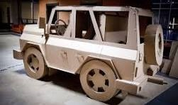
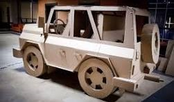

Home
Steps on how to make a car
images
 step 1 watch the video
step 2 order parts
step 3 then measure and cut out a rectangular piece of cardboard that is the same length of the sides then you cut out the width about equal car height.
step 4 apply glue along the buttom of the two sides gently position the two sides ontop of the rectangular piece and hold them in place until the glue dries.
step 5 make a roof for your car with carton and place it on the car and hold it gently till it dries
step 6 Make a room for the car wheels, make the wheels and glue them togeter them pit a skewer through the wheels.
step 7 slide two straw through the skewers.
step 8 cut out space for the gears and then put it in between the back wheels and then add your dc motor.
now slip a rubber band between the car gear and the dc motor gear.
then add your battery, wire and your switch control
And then your car is ready

step 1 watch the video
step 2 order parts
step 3 then measure and cut out a rectangular piece of cardboard that is the same length of the sides then you cut out the width about equal car height.
step 4 apply glue along the buttom of the two sides gently position the two sides ontop of the rectangular piece and hold them in place until the glue dries.
step 5 make a roof for your car with carton and place it on the car and hold it gently till it dries
step 6 Make a room for the car wheels, make the wheels and glue them togeter them pit a skewer through the wheels.
step 7 slide two straw through the skewers.
step 8 cut out space for the gears and then put it in between the back wheels and then add your dc motor.
now slip a rubber band between the car gear and the dc motor gear.
then add your battery, wire and your switch control
And then your car is ready
